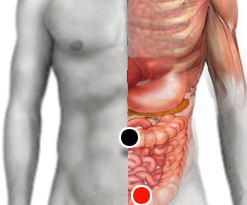

Autismo
colon transverso - suprapúbico (I)
nervio vago - riñón (D)
calcaneo - calcaneo
calcaneo - cuello
polo - calcaneo
muñeca arriba - riñón (d)

Generalidades:
Autismo
El Autismo es un trastorno psicológico en el que el individuo desarrolla poca comunicación con el mundo externo, su atención se vuelca al mundo interno, siendo poco sociable y funcional.
Dentro del espectro autista también se encuentra el Síndrome de Asperger. Trastornos genéticos como una mutación del cromosoma 11 conocida como Síndrome de Jacobsen pueden se un factor importante. El cromosoma 22 también está relacionado con el autismo.